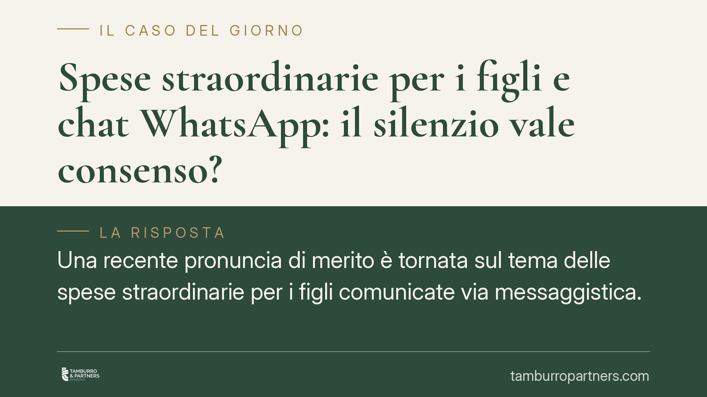

Spese straordinarie per i figli e chat WhatsApp: il silenzio vale consenso?
Una recente pronuncia di merito è tornata sul tema delle spese straordinarie per i figli comunicate via messaggistica. Il punto: se un genitore riceve l'avviso di una spesa e non risponde, quel silenzio può valere come adesione? La questione resta aperta e va valutata caso per caso, ma conoscere le regole del gioco aiuta a evitare contenziosi.

Il caso in sintesi
Il tema è tra i più frequenti nei rapporti tra genitori separati: le cosiddette spese straordinarie per i figli (visite mediche specialistiche, attività sportive, libri, gite scolastiche) vengono spesso comunicate tramite WhatsApp o altre app di messaggistica. Cosa accade se il genitore destinatario non risponde?
Una recente pronuncia di merito ha valorizzato il comportamento del genitore rimasto silente, ritenendo che l'assenza di un dissenso tempestivo e motivato possa concorrere a fondare l'obbligo di concorrere alla spesa. Si tratta, è bene chiarirlo subito, di una decisione di primo grado: non ha efficacia vincolante generale e non crea un precedente obbligatorio per gli altri giudici. Indica una lettura possibile, non una regola consolidata.
Inquadramento normativo
Occorre tenere distinti due piani che spesso vengono confusi.
Il primo riguarda la prova dei messaggi. L'art. 2712 c.c. attribuisce alle riproduzioni meccaniche — tra cui rientrano le chat — valore di prova dei fatti rappresentati, salvo che chi le subisce ne disconosca la conformità. Serve cioè a dimostrare *che* un messaggio è stato inviato e *cosa* conteneva. L'art. 2712 c.c. non dice, però, che il silenzio del destinatario equivalga ad accettazione: questo è un piano diverso.
Il secondo piano è quello del contenuto dell'obbligo. Il concorso alle spese per i figli trova fondamento nell'art. 337-ter c.c., che pone a carico di entrambi i genitori il mantenimento della prole in misura proporzionale al reddito. Da questa norma, letta insieme ai principi di buona fede e al dovere di leale collaborazione tra genitori, parte della giurisprudenza ricava che il genitore informato di una spesa abbia l'onere di manifestare un eventuale dissenso in modo tempestivo e ragionato. In mancanza, il suo comportamento può essere valutato dal giudice. È una valutazione discrezionale, non un automatismo.
Implicazioni pratiche
La distinzione tra genitore collocatario e genitore non collocatario resta centrale. Il genitore collocatario — quello presso cui il figlio vive prevalentemente — di norma anticipa le spese e chiede poi il rimborso della quota (tipicamente il 50%). Il genitore non collocatario, dal canto suo, ha interesse a conoscere per tempo le spese per poterle valutare.
Attenzione a non trarre conclusioni eccessive. Il fatto che una pronuncia abbia dato rilievo al silenzio non trasforma ogni comunicazione in un obbligo automatico di pagamento. Restano pienamente legittimi:
- il dissenso tempestivo, espresso in tempi ragionevoli;
- il dissenso motivato, che spieghi perché la spesa non è condivisa (non concordata, non necessaria, sproporzionata).
Resta inoltre la distinzione tra spese straordinarie che richiedono il previo accordo e spese per così dire "obbligatorie" o urgenti, per le quali la concertazione preventiva può non essere esigibile. La casistica è variegata e molto dipende dal contenuto dei provvedimenti di separazione o divorzio, che spesso già disciplinano modalità e termini.
Cosa fare in concreto
- Comunicate per iscritto e in modo chiaro. Chi anticipa una spesa indichi natura, importo, motivazione e, dove possibile, alleghi il preventivo o la fattura. Un messaggio generico è più facilmente contestabile.
- Rispondete sempre, anche per dire no. Chi riceve la comunicazione e non è d'accordo esprima il dissenso per iscritto, in tempi brevi e con una motivazione concreta. Il silenzio può essere interpretato a sfavore.
- Conservate le conversazioni integre. Salvate le chat con date e contenuti completi: in caso di contestazione ne va dimostrata la conformità ai sensi dell'art. 2712 c.c.
- Verificate il vostro provvedimento. Controllate cosa prevedono sentenza o accordo in merito a quali spese richiedono il previo consenso e con quali tempi.
- In caso di dubbio, fatevi assistere. Prima di avviare o resistere a una richiesta di rimborso, consigliamo di valutare la posizione con un professionista, perché l'esito dipende dai dettagli del singolo caso.
La questione, come anticipato, non è definitivamente assestata e va letta con prudenza. Ciò che emerge, al di là della singola decisione, è l'importanza di comunicazioni chiare e di reazioni tempestive: strumenti semplici che riducono in modo significativo il rischio di contenzioso.
---
Contributo informativo a cura di Tamburro & Partners Avvocati - Avv. Giuseppe Tamburro. Non costituisce parere legale.
Ogni famiglia ha il suo equilibrio.
Separazione, divorzio, affidamento, assegno: se vuoi un confronto riservato su una specifica situazione, scrivi allo studio. Ti rispondiamo entro un giorno lavorativo.